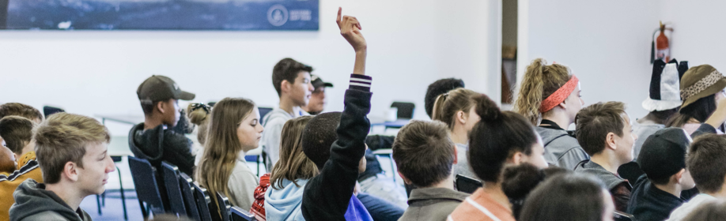
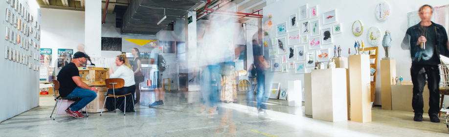

彫刻学科
Sculpture
Sculpture
教員の作家性を反映したユニークな授業や絵画技術の習得を通して、独自の絵画性を追求する
当大学の工芸学部は、建築学科と美術工芸学科の二つの学科にて構成されています。 工学部系の学科と美術・芸術系の学科が同じキャンパスで共生している大学は本学だけといってもいいかもしれません。 建築学科では、現代建築は勿論のこと、古都京都の特徴を反映した伝統的建築（社寺仏閣や茶室、京町屋など）を学ぶ事が出来ます。
また、美術工芸学科では任天堂などとの協力での先端的創作教育や正倉院宝物などの文化財関連の教育も行っています。 “ものづくり”を基本理念とした本学では、これら両学科が垣根を越えてお互いの知識や経験を生かして新しい理念、新しいモノづくりへチャレンジできる人材を育成してきました。
伝統という知識と技、基本を学びながら新しい伝統・文化を作る、そのような教育を目指しています。
また、美術工芸学科では任天堂などとの協力での先端的創作教育や正倉院宝物などの文化財関連の教育も行っています。 “ものづくり”を基本理念とした本学では、これら両学科が垣根を越えてお互いの知識や経験を生かして新しい理念、新しいモノづくりへチャレンジできる人材を育成してきました。
伝統という知識と技、基本を学びながら新しい伝統・文化を作る、そのような教育を目指しています。
カリキュラム
curriculum
1年次
「課題を通して絵画、造形表現の基礎を修得。」
課題制作を通して、観察力、描写力など表現者としての技法の基本を身につけます。「技法講座」では、テンペラ、銅版画、下地研究、映像、樹脂、陶芸、和紙、パフォーマンスから1つを選択し、理論に裏づけされた表現力を基礎から固めていきます。
2年次
「表現者としての技法を磨くとともに、求める方向性を次第に明確化。」
引き続き、表現者としての技法を磨くとともに、批評会での議論や教員との対話を重ねながら、自らの表現を外からの視点で見つめ直し、求める方向性を次第に明確にしていきます。
3年次
「個別にカリキュラムを設計し、自己表現をより深く追究。」
教員の指導方法や自らのめざす表現をふまえて最終的にグループを選択し、卒業まで同じグループに所属します。担当教員とのきめ細かな話し合いに基づいて個別にカリキュラムを設計し、「自己表現とは何か」をより深く追究しながら、制作に取り組んでいきます。さらに、毎年グループごとに学内ギャラリーで複数回開催される展覧会に出展し、広く社会に向けて作品を発表する力を養います。
4年次
「多角的な視点からの指導を受けながら、作品の完成度を向上。」
4年間の集大成として、卒業制作に取り組みます。制作は各グループの担当教員が指導しますが、他のグループの教員も求めに応じてアドバイスを行います。こうした多角的な視点からの指導を受けながら、作品の完成度を高めていきます。
卒業生メッセージ
graduated
資格・進路
license
在学中に取得可能な資格
- 二級建築士
- インテリアプランナー
- 2級インテリア設計士
- 色彩検定
- Illustratorクリエイター能力認定
- TOEIC®
- インテリアパース など
進路イメージ
- アートディレクター
- グラフィックデザイナー
- イラストレーター
- プロダクトデザイナー
- インテリアデザイナー など
- ディスプレイデザイナー